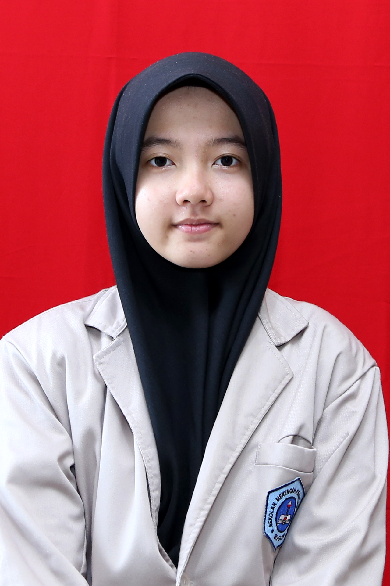

PAS (Pertemuan 6)
Laman ini dibuat untuk PAS Praktik SimDig kelas XI.1
Laman ini dibuat untuk PAS Praktik SimDig kelas XI.1
Pada akhir Desember tahun 2019 terjadi suatu bencana yang begitu besar, yaitu munculnya Corona Virus di Wuhan, Cina. Virus tersebut menyebabkan pandemi di seluruh dunia, sehingga banyak negara yang melakukan LockDown termasuk Indonesia. Corona Virus muncul pertama pada bulan Maret tahun 2020, dan pada bulan itu juga Indonesia melakukan Lock Down, sehingga seluruh sekolah di Indonesia melakukan Sistem Pembelajaran Jarak Jauh (PJJ).
Sistem Pembelajaran Jarak Jauh (PJJ) memberikan kita pengalaman baru dalam belajar. Saya merasa kesulitan dalam belajar tersebut karena tidak dapat berdiskusi secara langsung dengan teman ataupun guru.Lingkungan rumah memiliki suasana yang berbeda dengan sekolah sehingga membuat saya menjadi malas dalam belajar belum lagi kalau ada kendala dalam fasilitas pembelajarannya seperti lag, kehabisan internet, mati lampu, dll. Namun, karena Lock Down ini saya jadi lebih banyak memiliki waktu bersama keluarga. pembelajaran saat ini sangat memaksimalkan penggunaan teknologi yang memiliki pengalaman seru yang tidak ada pada saat sekolah tatap muka.
Selama dirumah, saya mempelajari hal lain yang tidak dilakukan di sekolah. saya jadi ada waktu untuk belajar masak, membuat kue, merawat tanaman, dan bereksperimen seru lainnya. Saya juga sering menghubungi teman-teman dan keluarga saya melalui video call, kita juga sering bermain bersama melalui game yang bisa dimainkan bersama seperti Mobile Legends, Zepeto, Line Play, dan Sausage Man. Ada kelebihan dan kekurangan dari Lock Down ini. Namun, saya ingin semua kembali seperti sedia kala, semua orang sehat kembali dan virusnya segera hilang.
| Data Diri | Keterangan | Foto |
| Nama | Dinda Rizki Suaidiani |  |
| Tempat/Tanggal Lahir | Bogor, 20 Juli 2004 | |
| Alamat | Bukit Kayumanis,Jln Cempaka I Blok AD/19 Kec. Tanah Sareal,Bogor | |
| Asal Sekolah | SMK-SMAK Bogor | |
| Kelas | XI.1 | |
| Hobi | Bermain Game,Menyanyi |